Oil geopolitical risk: off the March peak, still high. Iacoviello's oil-related AI-GPR read 752 in September, below the March 2026 record of 1,844 but above the 2003 Iraq-war (515) and 2022 Ukraine (736) readings. Source: https://www.matteoiacoviello.com/ai_gpr.html
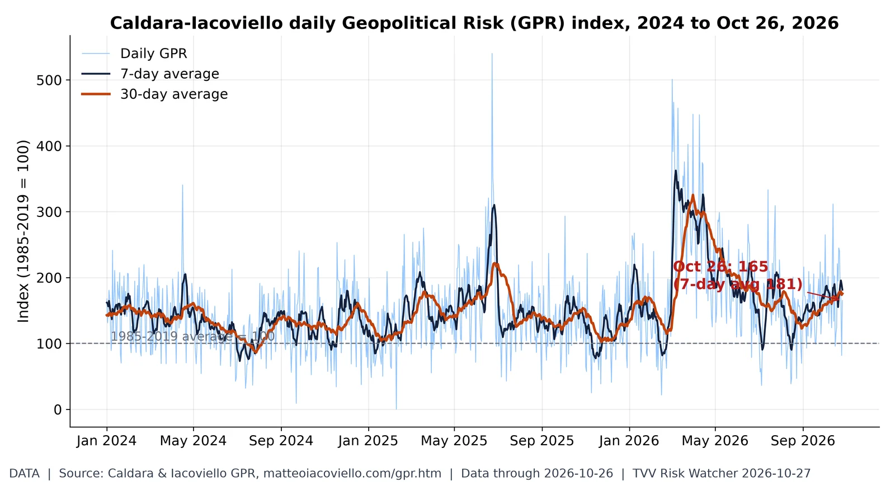
Daily Geopolitical Risk index. Daily GPR read 165 on Oct 26 (7-day average 181, 30-day 175) against a 1985-2019 norm of 100; the 2026 daily high so far is 501 on Mar 2. Source: https://www.matteoiacoviello.com/gpr.htm
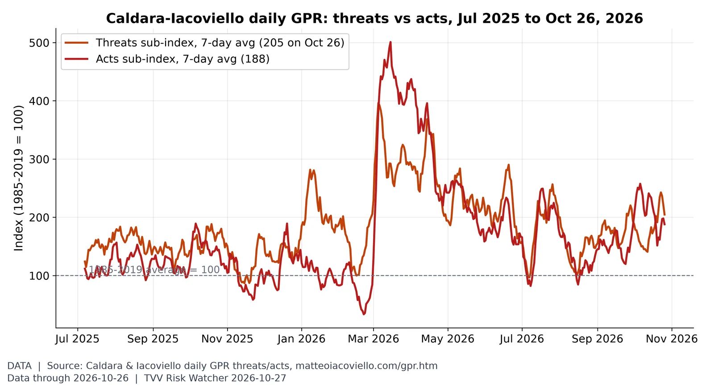
Threats vs acts. In the week to Oct 26 the threats sub-index averaged 205 and the acts sub-index 188 (2026 highs of the 7-day averages: threats 396 on Mar 5, acts 501 on Mar 15). Source: https://www.matteoiacoviello.com/gpr.htm
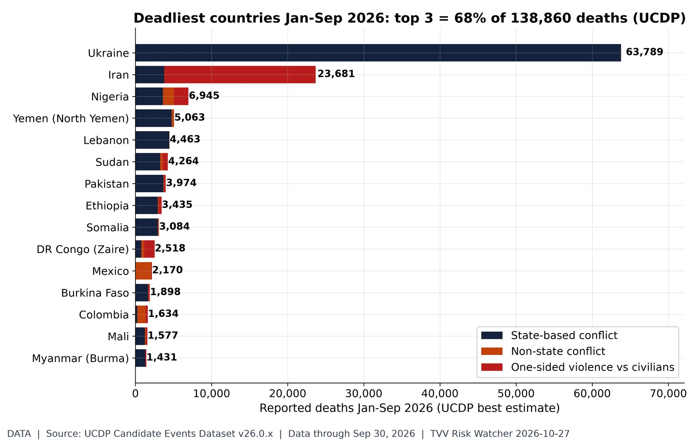
The deadliest conflict zones of 2026. UCDP candidate events Jan-Sep 2026: 138,860 deaths worldwide; Ukraine 63,789, Iran 23,681, Nigeria 6,945, Yemen (North Yemen) 5,063, Lebanon 4,463. Largest one-sided (civilian-targeted) toll: Iran 19,901. UCDP codes organized violence (state, non-state, one-sided), which includes but is not limited to terrorism; candidate data are preliminary and revised monthly. Source: https://ucdp.uu.se/downloads/
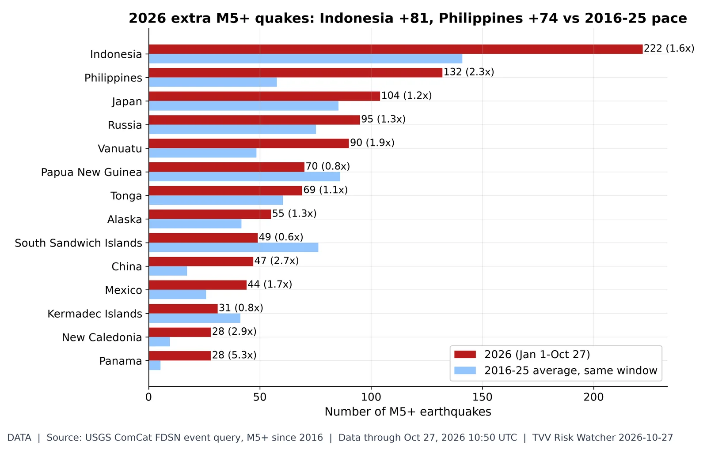
Which regions are shaking more?. USGS ComCat M5+ through 10:50 UTC Oct 27: 1,681 in 2026 vs a 2016-25 average of 1,418 for the same Jan 1-Oct 27 window. Busiest: Indonesia 222 (avg 141.0), Philippines 132 (avg 57.6), Japan 104 (avg 85.3), Russia 95 (avg 75.2). Biggest excess vs normal (regions averaging 5+): Panama 5.3x, New Caledonia 2.9x, China 2.7x. Regions are USGS place-name tails (country or named region), so offshore zones may split. Source: https://earthquake.usgs.gov/fdsnws/event/1/query?format=csv&starttime=2016-01-01&minmagnitude=5&orderby=time-asc&limit=20000&eventtype=earthquake
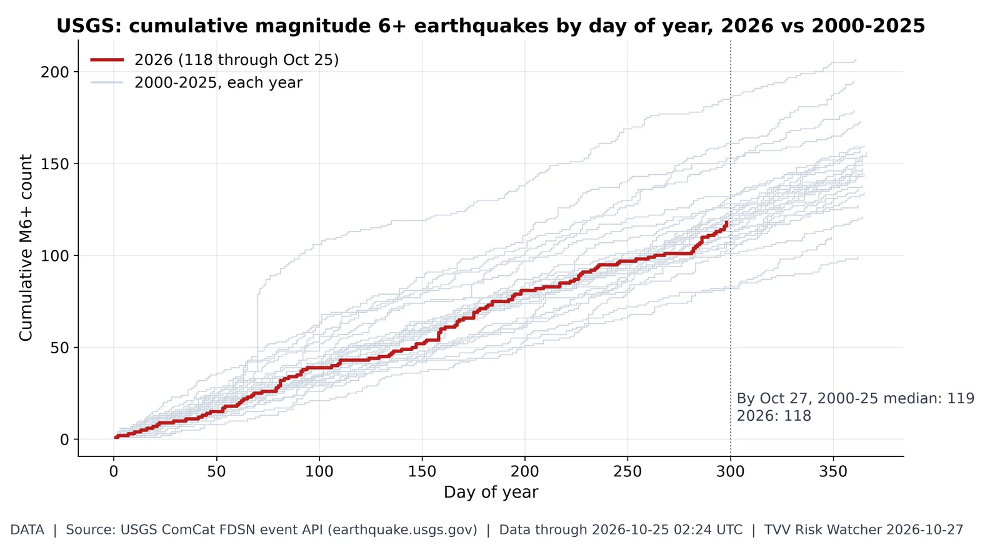
M6+ earthquake pace. 2026 has 118 M6+ quakes through Oct 25 vs a 2000-25 median of 119 by this date (range 82-186). Latest: M6.1 25 km ENE of Port-Olry, Vanuatu (Oct 25, 02:24 UTC). 12 duplicate USGS solution(s) of the same event merged. Source: https://earthquake.usgs.gov/fdsnws/event/1/
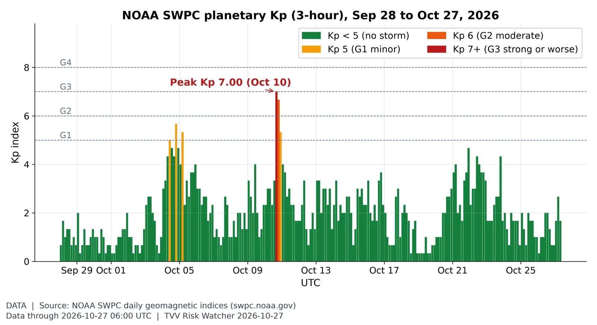
Geomagnetic activity, last 30 days. Kp peaked at 7.00 on Oct 10 in this 30-day window; since Oct 26 00 UTC it maxed at Kp 2.67, and NOAA's latest 3-day forecast (issued 2026 Oct 27 0030 UTC) has a peak Kp 2.33 on Oct 27. Source: https://www.swpc.noaa.gov/products/planetary-k-index
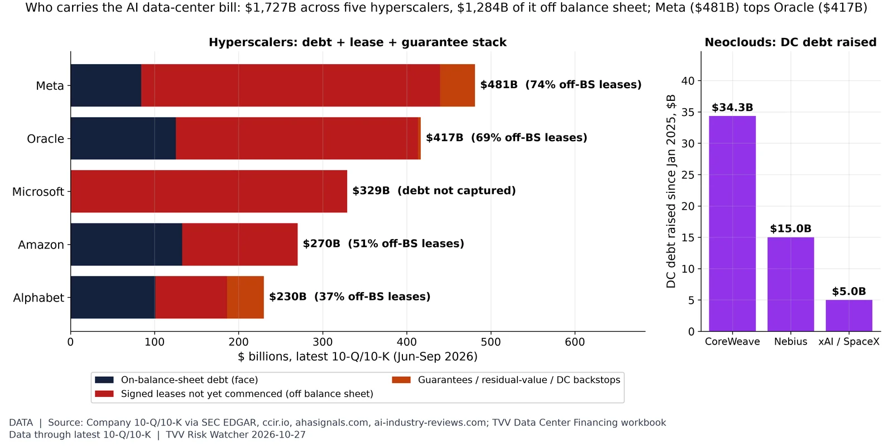
Who carries the AI data-center liabilities. Debt plus signed-but-not-commenced leases plus guarantees, latest filings: Meta $481B (debt $84B, leases $356B, residual-value guarantees up to $41.5B), Oracle $417B (debt $125B, leases $288B, lessor guarantee $3.3B), Amazon $270B, Alphabet $230B (incl. $43.8B of neocloud DC backstops), Microsoft $329B of leases (debt not captured in TVV file). Off-balance-sheet items are $1,284B of $1,727B. Meta's $454B purchase commitments are excluded. Neocloud DC debt since Jan 2025: CoreWeave $34.3B, Nebius $15.0B, xAI $5.0B. Microsoft and Alphabet report Oct 28, Amazon Oct 29 (Meta reported Oct 21). Source: https://www.sec.gov/Archives/edgar/data/1341439/000119312526389274/orcl-20260831.htm
Yield curve after inversion. The 10Y-2Y spread is +0.32 pt on Oct 26 (Treasury: 10Y 5.00%, 2Y 4.68%), positive after the 2022-24 inversion; un-inversion preceded past recessions. Source: https://fred.stlouisfed.org/series/T10Y2Y
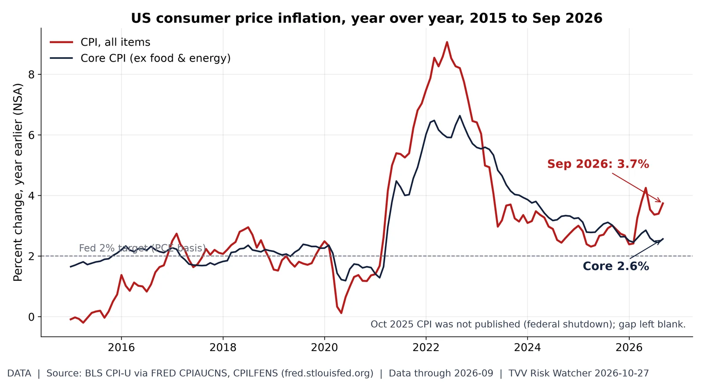
Energy-led inflation gap. Headline CPI was 3.7% year over year in September (from 3.4% in August) while core was 2.6%: energy is driving the gap. Source: https://fred.stlouisfed.org/series/CPIAUCNS
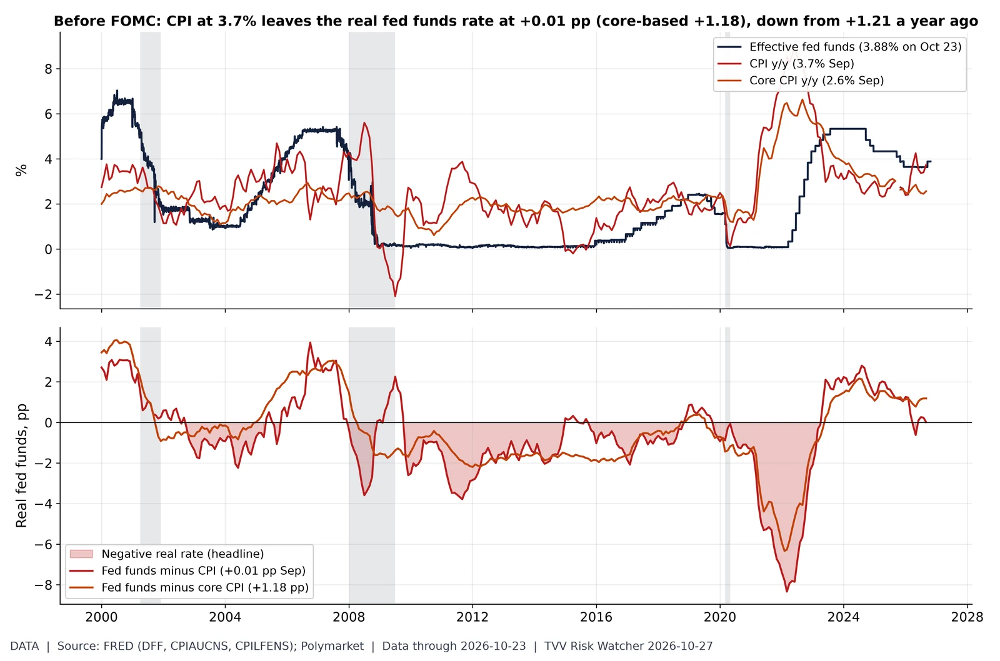
How tight is the Fed, really?. Effective fed funds 3.88% (Oct 23) vs CPI 3.7% y/y in September: the real rate on headline CPI is +0.01 pp (core-based +1.18 pp, core 2.6%). A year ago (Sep 2025) it was +1.21 pp. Polymarket prices a December 25bp HIKE at 75.5% (no change 21.0%) ahead of the Oct 28 decision. Monthly average fed funds minus y/y CPI (not seasonally adjusted). Source: https://fred.stlouisfed.org/series/DFF
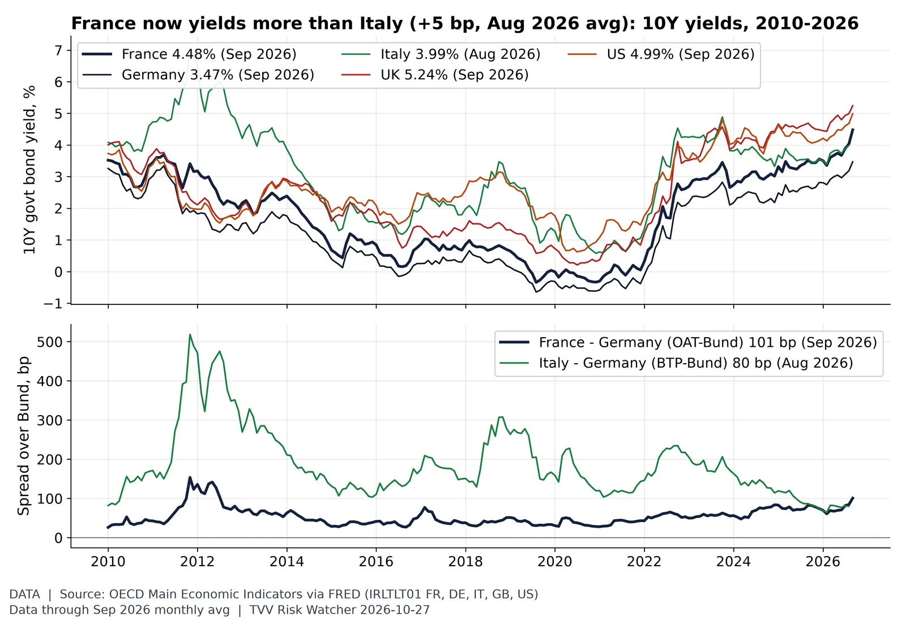
France bond risk, in context. OECD monthly 10Y yields: France 4.48% in Sep 2026, Germany 3.47%, UK 5.24%, US 4.99%, Italy 3.99% (Aug 2026). OAT-Bund 101 bp vs BTP-Bund 80 bp; France-Italy gap +5 bp (Aug 2026; it was -56 bp in Jan 2010). Monthly averages lag daily moves; daily OAT quotes are not charted (ECB/Banque de France daily series unreachable from the box). Source: https://fred.stlouisfed.org/series/IRLTLT01FRM156N
Ebola outbreak not slowing. INSP SitRep 164 (situation Oct 25): 10,060 confirmed cases and 4,887 deaths (48.6% of confirmed cases) since the first bulletin May 14; 7-day average 72.6 new cases/day (peak 129.4 around Jul 28). Top provinces: Ituri 7,211, Nord-Kivu 2,309, Haut-Uélé 436. Daily values where bulletins skip days are spread evenly; data are as transcribed by ebola-tracker.org from INSP PDFs. Source: https://ebola-tracker.org/en/database/
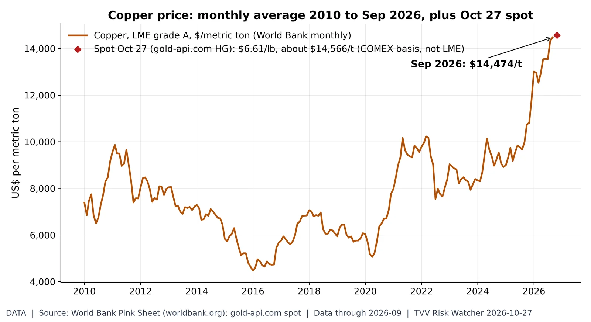
Copper near the top of its range. Copper averaged $14,474/t in September (a 2010-26 monthly record); the Oct 27 COMEX-basis spot quote is $6.61/lb (about $14,566/t). Source: https://www.worldbank.org/en/research/commodity-markets
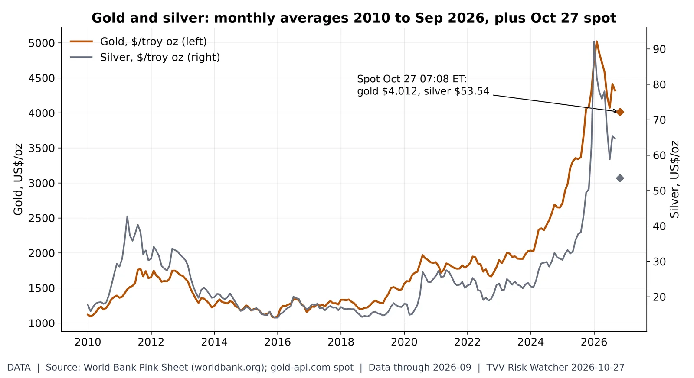
Haven metals. Gold averaged $4,319 in September (2010-26 monthly high $5,020, Feb 2026) and silver $64.60; gold-api.com spot at 07:08 ET Oct 27 is gold $4,012, silver $53.54. Source: https://www.worldbank.org/en/research/commodity-markets
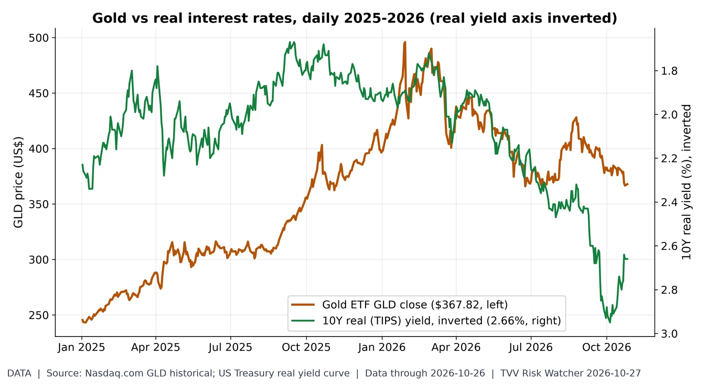
Gold vs real rates. GLD closed at $367.82 on Oct 26, 25.8% below its Jan 29, 2026 high of $495.90; the 10Y real yield is 2.66%. 2026 daily correlation of GLD returns with real-yield changes: -0.26. Source: https://www.nasdaq.com/market-activity/etf/gld/historical
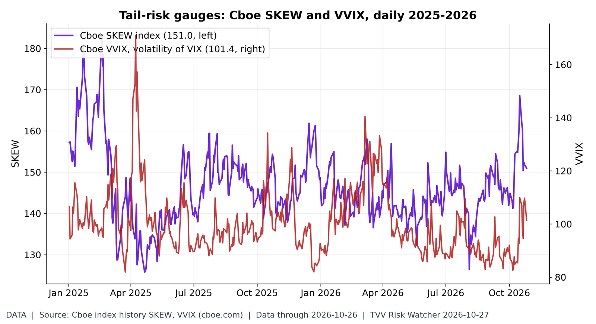
Is anyone paying for crash protection?. On Oct 26 SKEW closed at 151.0 (2026 range 126.4-168.6) and VVIX at 101.4 (2026 high 140.4 on Mar 6). Higher SKEW = costlier far-out-of-the-money S&P puts. Source: https://www.cboe.com/us/indices/dashboard/skew/
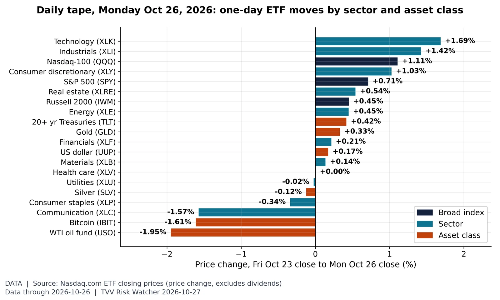
The last session by sector. On Monday Oct 26, the best performer was Technology (XLK, +1.69%) and the worst WTI oil fund (USO, -1.95%), with SPY +0.71% and QQQ +1.11%. Source: https://www.nasdaq.com/market-activity/etf/spy/historical
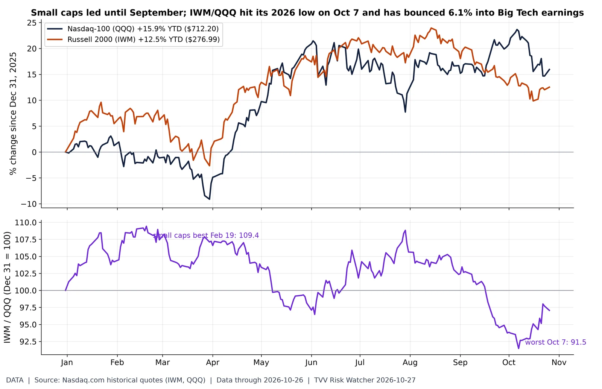
Is the rally broadening before earnings?. Closes Mon Oct 26: QQQ $712.20 (+15.9% YTD) vs IWM $276.99 (+12.5%). The IWM/QQQ ratio is 97.1 (Dec 31 = 100), +2.3% over the last 20 sessions; its 2026 high was 109.4 on Feb 19 and its low 91.5 on Oct 7, so small caps have regained 6.1% relative to Nasdaq-100 since. A rising ratio means breadth beyond megacaps; Microsoft and Alphabet report Oct 28, Amazon Oct 29, Apple Nov 2 (Meta reported Oct 21). Source: https://www.nasdaq.com/market-activity/etf/iwm/historical
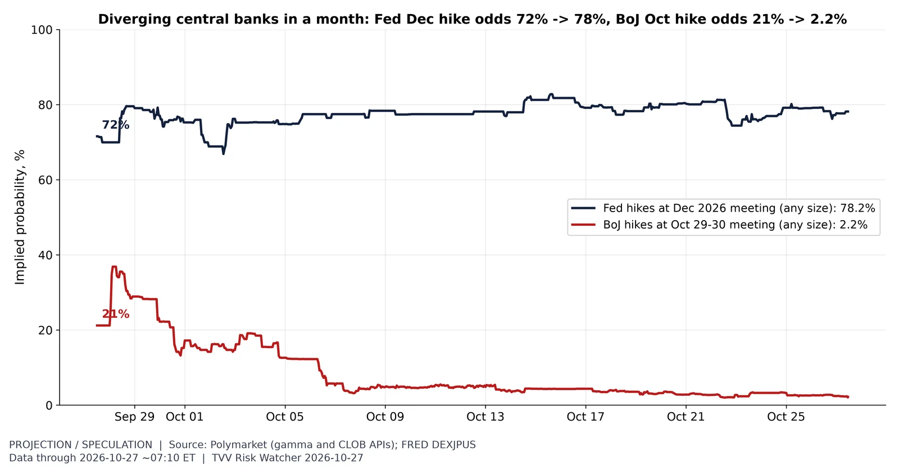
Fed up, BoJ on hold. Polymarket: odds the Fed RAISES rates at its December meeting rose from 71.5% (Sep 27) to 78.2% at ~7:10 AM ET Oct 27 (no change 21.0%); odds the BoJ hikes on Oct 29-30 fell from 21.2% to 2.2% (no change 98.0%). A wider US-Japan rate gap is yen-negative; FRED yen at 156.87 per dollar (Oct 23). FOMC decides Oct 28. Source: https://polymarket.com/event/fed-decision-in-december-20260729232808632
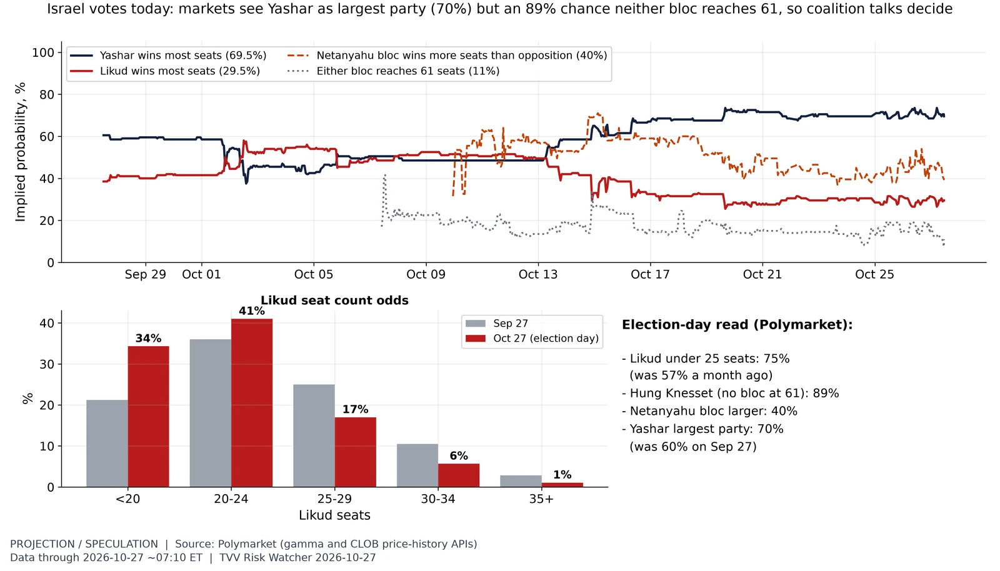
Israel election day in the markets. Polymarket at ~7:10 AM ET Oct 27 (election day): Yashar 69.5% to win the most Knesset seats vs Likud 29.5% (Likud was 38.5% on Sep 27); Likud seats: <20 34.3%, 20-24 41.0%, 25-29 17.0%, 30-34 5.7%, 35+ 1.1%. Netanyahu bloc outscores the opposition bloc: 40%; either bloc at 61+: 11%. Market odds are crowd prices, not polls or results; thin markets can move fast as counts arrive. (Separate from the resting Israel PM market.) Source: https://polymarket.com/event/israeli-legislative-election-winner
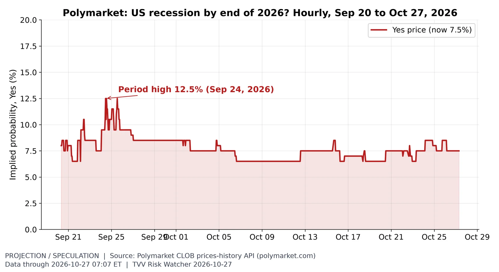
Recession odds. Traders price a 7.5% chance of a US recession by end-2026 (market rules define it), vs a high of 12.5% on Sep 24 in the API history window (hourly since Sep 20). Source: https://polymarket.com/event/us-recession-by-end-of-2026
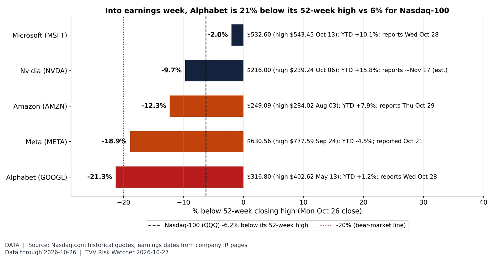
Big Tech going into earnings. Closes Mon Oct 26 vs 52-week closing highs: Alphabet -21.3% ($316.80 vs $402.62 on May 13, YTD +1.2%); Meta -18.9% ($630.56 vs $777.59 on Sep 24, YTD -4.5%); Amazon -12.3% ($249.09 vs $284.02 on Aug 3, YTD +7.9%); Nvidia -9.7% ($216.00 vs $239.24 on Oct 6, YTD +15.8%); Microsoft -2.0% ($532.60 vs $543.45 on Oct 13, YTD +10.1%); Nasdaq-100 -6.2%. Microsoft and Alphabet report Wed Oct 28 after the close, the same day as the FOMC decision; Amazon Thu Oct 29; Meta reported Oct 21; Apple Nov 2. Source: https://www.nasdaq.com/market-activity/stocks/msft/historical
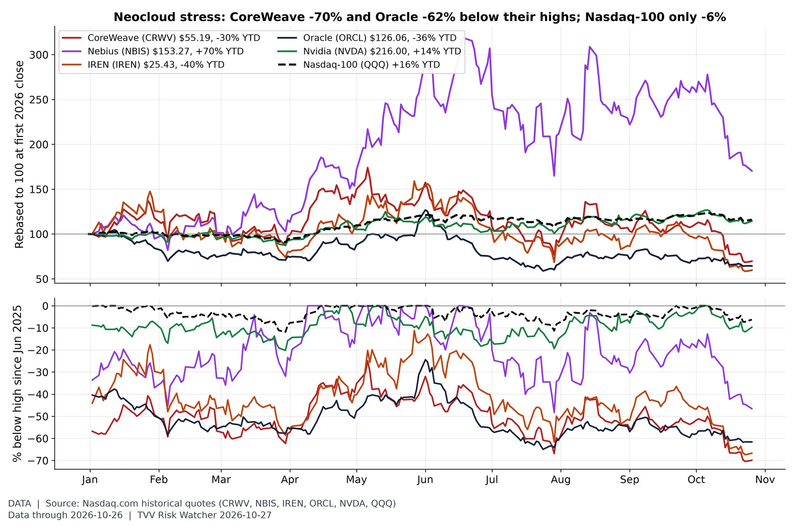
Neocloud stocks vs the index. Closes Mon Oct 26: CoreWeave $55.19, -70% below its Jun 20, 2025 high of $183.58; Oracle $126.06, -62% below $328.33 (Sep 10, 2025); Nebius -47%, IREN -67%, Nvidia -10% off highs (since Jun 2025), vs Nasdaq-100 -6.2%. The most debt-funded AI builders trade furthest below their peaks; CoreWeave's CDS is above 1,000bp per the TVV DC workbook. Microsoft and Alphabet report Oct 28 (FOMC day), Amazon Oct 29; Meta reported Oct 21. Source: https://www.nasdaq.com/market-activity/stocks/crwv/historical